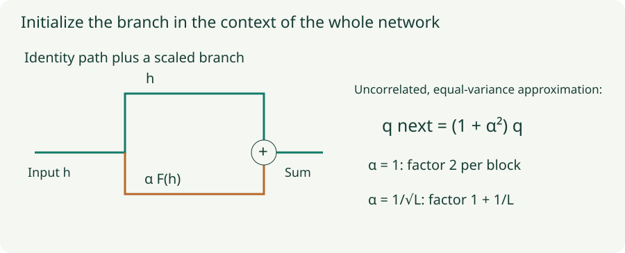

Residual and Transformer Initialization: Start the Whole Architecture
Understand branch scaling, zero gates, attention logits, and the limits of a layer-by-layer recipe.
A layer can be well scaled in isolation while the whole network is poorly scaled. Residual additions accumulate signals, attention forms dot products, and normalization changes where scale enters the computation. The final initialization decision must describe the architecture, not just the name of its hidden activation.
1. Residual addition introduces another variance term
For one coordinate of $h^+=h+\alpha F(h)$, the exact variance identity is
Suppose, as an initialization approximation, that the branch is uncorrelated with the shortcut and has the same variance $q$. Then $q^+\approx(1+\alpha^2)q$. The covariance term is not always zero in a trained network. For fresh independent zero-mean branch weights, it can vanish in an ensemble expectation even though one sampled network has nonzero empirical correlation.
With unscaled branches, $\alpha=1$, repeated equal-variance additions suggest $q_L\approx2^Lq_0$. If $\alpha=1/\sqrt L$, the corresponding factor becomes $(1+1/L)^L$, which approaches $e$ instead of growing exponentially with depth. This is a useful scaling argument under stated assumptions, not a universal residual-network initialization theorem.

2. Lab: measure an actual residual chain
Identity plus a sampled linear branch
The model is $h_{l+1}=h_l+\alpha W_lh_l$, with width 32, independent Gaussian weight entries of variance $1/32$, and 64 Gaussian inputs. It has no normalization or activation. Compare measured signal growth with the ensemble prediction $(1+\alpha^2)^l$, and inspect backward derivative growth through the same matrices.
The chart reports ratios relative to the input activation moment and final output-gradient moment. The forward and backward curves travel in opposite directions along the layer axis. The zero-gate option shows the initial identity mapping only; it does not simulate learning those gates. Finite draws fluctuate around the ensemble prediction.
3. Starting a branch at zero can preserve learning
Consider $F(h)=W_2\phi(W_1h)$, with $W_1$ random and $W_2=0$. Initially $h^+=h$. For an upstream gradient $g$, the final projection receives a gradient proportional to $g\phi(W_1h)^T$, which can be nonzero. The gradient reaching $W_1$ through the branch contains $W_2^T$ and is initially zero.
After the final projection changes, earlier branch parameters can begin receiving gradients. This is different from setting every branch matrix to zero: if the hidden features are also zero, the final projection may have nothing to learn from. The initial gradient path explains which zero is intentional.
ReZero uses a learned scalar gate, $h^+=h+\alpha F(h)$, initialized at $\alpha=0$. Initially the branch-weight gradient is multiplied by zero, but the gate gradient is $g^TF(h)$ and can be nonzero when the branch itself is nonzero. Once the gate moves, the branch weights can learn. Setting both the gate and the complete branch output to zero can remove that opening mechanism.
4. Fixup is a coordinated recipe
For its residual-network setting with $L$ branches and $m$ weight layers per branch, Fixup zero-initializes the final weight layer of each branch and the classification layer. It scales the standard initialization of the other branch weight layers by $L^{-1/(2m-2)}$, and adds scalar biases initialized to zero plus a branch multiplier initialized to one.
The product of the $m-1$ nonzero layer scale factors is $L^{-1/2}$. That relates the recipe to depth-dependent control, but the zero final layer and added parameters are also part of the method. Copying one scale factor into a different architecture does not reproduce Fixup’s complete construction. Use the paper’s specified placement of biases and multipliers when implementing it.
5. Attention has its own aggregation scale
A query–key score is a sum $s=q^Tk=\sum_{j=1}^{d_k}q_jk_j$. If coordinates are independent, zero mean, and have variances $v_q$ and $v_k$, then
For unit-variance coordinates and $d_k=64$, an unscaled score has standard deviation 8, whereas dividing by $\sqrt{64}$ gives standard deviation 1. Large score differences can make softmax nearly one-hot and reduce useful gradients for many alternatives. The scaling helps control this source of growth under the approximation.
The division by $\sqrt{d_k}$ is part of the attention forward computation, not itself a weight initializer. Query/key projection initialization and normalized input statistics determine $v_q$ and $v_k$. If both coordinate variances were 4, the scaled score variance would still be 16. The denominator does not correct arbitrary projection scales, correlations, or learned distributions.
6. Normalization placement changes the residual path
A simplified pre-norm block has $h^+=h+F(\operatorname{LN}(h))$. Its residual stream includes a direct identity derivative plus the branch derivative. A post-norm block has $h^+=\operatorname{LN}(h+F(h))$, so the normalization Jacobian also acts on the shortcut’s contribution.
These are different gradient paths. LayerNorm does not make all initialization choices equivalent, and its output normalization does not directly set every parameter-gradient scale. Depth scaling, residual output projections, normalization gains, and the learning-rate warmup schedule should be assessed together. A Transformer may have multiple residual branches per block, so count the actual additions when interpreting a depth-dependent scale.
7. Treat parameter roles explicitly
| Parameter role | Initialization question | Useful diagnostic |
|---|---|---|
| Hidden MLP weights | Which activation and fan convention follow this matrix? | Forward moments and activation derivatives. |
| Residual output projection or gate | How strong should the whole branch start? | Branch-to-stream magnitude and initial gradient access. |
| Query/key projections | What score distribution reaches softmax? | Score scale, attention entropy, and saturated rows. |
| Embeddings and tied output heads | Does one tensor serve two different scale-sensitive roles? | Embedding norms and initial output logits. |
| Normalization gains and offsets | Is identity scaling or a deliberate zero branch intended? | The actual residual mapping and parameter gradients. |
Tied embeddings should not accidentally be initialized twice by a generic traversal. Positional embeddings, recurrent gates, and specialized modules may have their own architecture-defined conventions. For recurrent networks, initializing a recurrent matrix orthogonally can help its linear component without eliminating the effect of nonlinear gates over time.
8. Verify the complete untrained model
Record the initialization distribution, standard deviation or bounds, gain, fan orientation, seed, and any depth scaling. Then run representative inputs through the complete forward pass and a backward pass. Check logits, attention distributions, residual branch magnitudes, and gradients—not only weight histograms.
Compare several seeds when behavior is fragile. Keep initialization separate from the optimizer and regularization decisions, while checking how they interact: dropout changes activation moments during training, normalization changes scale dependence, and the first learning-rate step can overwhelm a carefully chosen starting scale. The optimizer series and regularization series cover those next decisions.
Questions with answers
The shortcut preserves a route, but its output is added to a branch. The sum’s variance includes branch variance and covariance terms.
Its gradient depends on the nonzero branch output. The gate can move first, allowing branch weights to receive gradients later.
No. The score variance after scaling still depends on the query and key variances and their correlations.
Sources
Zhang et al., Fixup Initialization; Bachlechner et al., ReZero; Vaswani et al., Attention Is All You Need; Xiong et al., On Layer Normalization in the Transformer Architecture. The linear residual-chain experiment is an isolated model of accumulation, not a complete Transformer simulation.